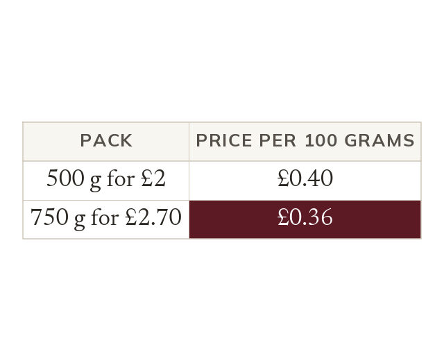
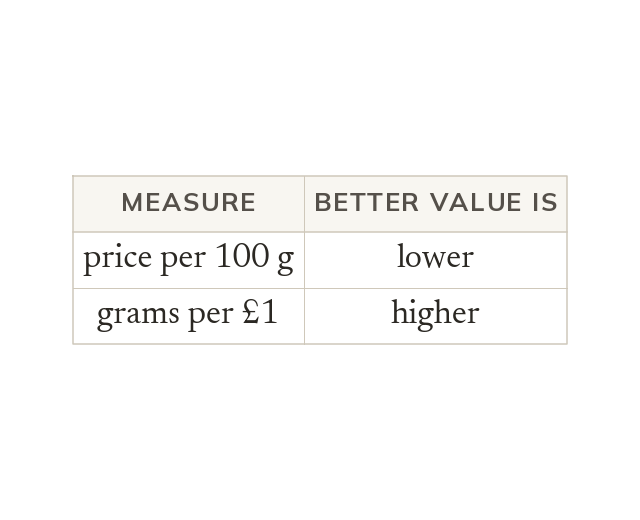
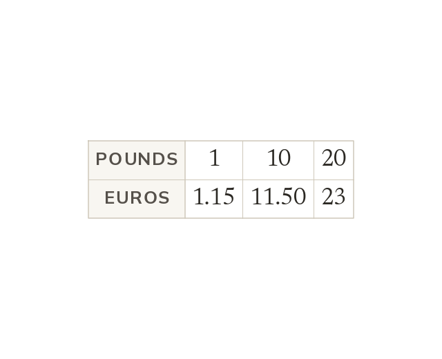
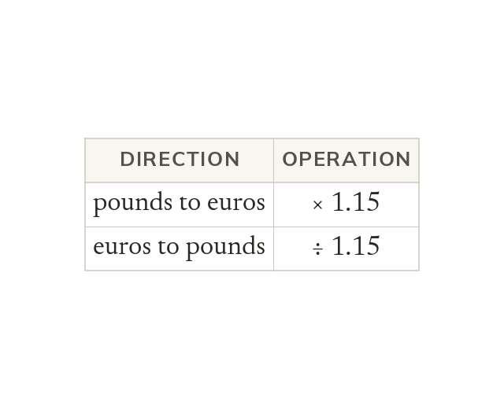

The same amount of each
Two packs are compared by finding the price of the same amount of each. The lower price per unit is the better value.
Bigger packs are not always better value, and prices abroad are in another currency. Today we compare fairly and convert between currencies.
Work down the page at your own pace. Write every answer in your book first, then click to check it.
Read each card, then follow the worked examples one step at a time.

Two packs are compared by finding the price of the same amount of each. The lower price per unit is the better value.

Price per gram and grams per pound rank the packs in opposite directions. So a conclusion says which measure was used.
Pick an answer. If it's wrong, the feedback tells you which mistake it was.
Read each card, then follow the worked examples one step at a time.

Converting currency is direct proportion, with the exchange rate as the multiplier. If £1 = €1.15, then £20 = 20 × 1.15 = €23.

To convert back, divide by the rate instead of multiplying. So €46 is 46 ÷ 1.15 = £40.
Pick an answer. If it's wrong, the feedback tells you which mistake it was.
Finished? Next lesson: 10.22.1 Recognising Direct Proportion.
Log in, then search for a code to practise that skill.